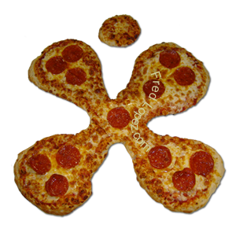

I've never been able to make pizza from scratch at home despite having worked at a pizza place and made exellent pizza very efficently. But while working I got the idea to make art out of pizza.

This pizza is a butterfly, I spinked bellpepers on it's wings for color, using tomato slices to make the edge of the wings more colorful. I put some jalapeno slices down tht middle for the body and olives for the eyes and mouth.
I was a Cingular Wireless subscriber at the time and there was a store close to where I worked. It's really just a shapped Pepperoni Pizza.
If you want to see more pizza art, visit me at AgentLopez.com